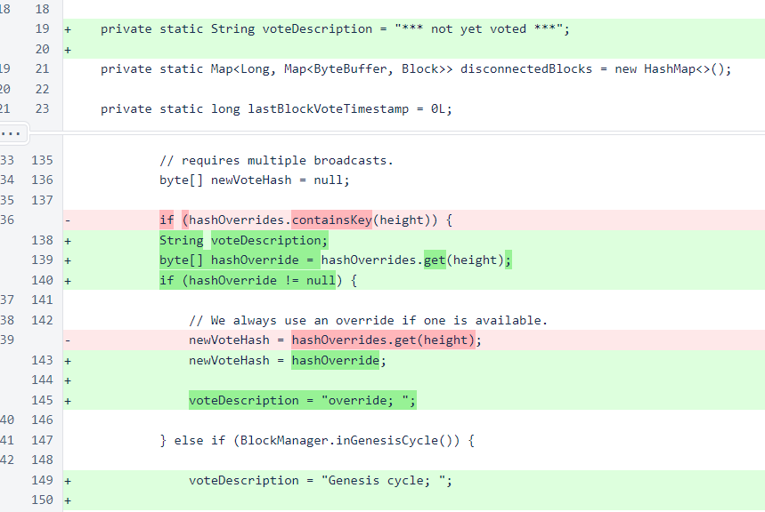
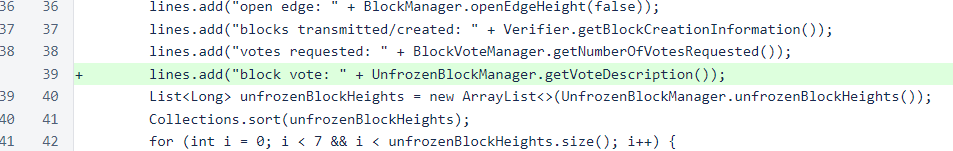
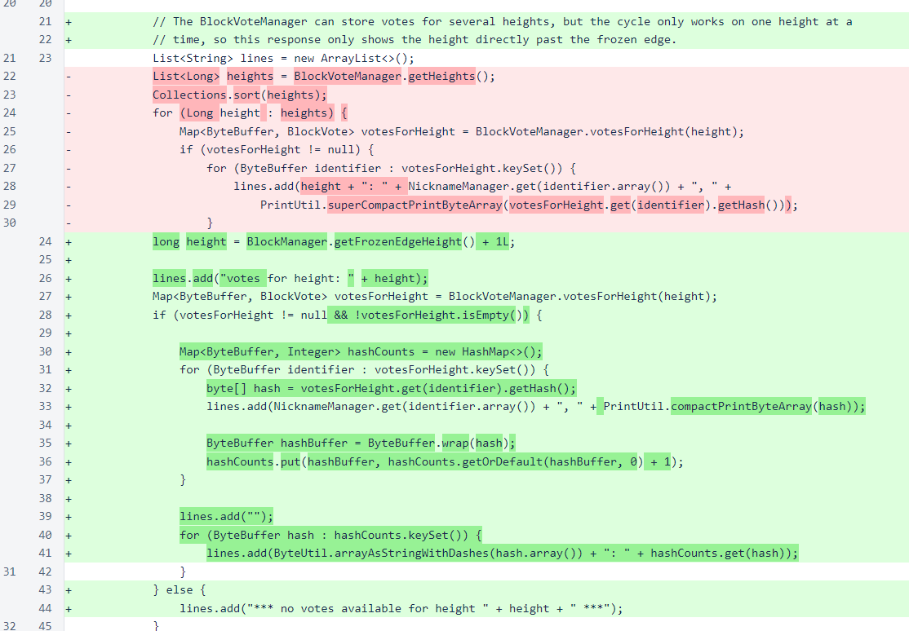
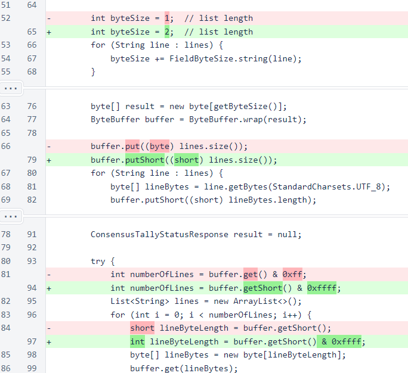
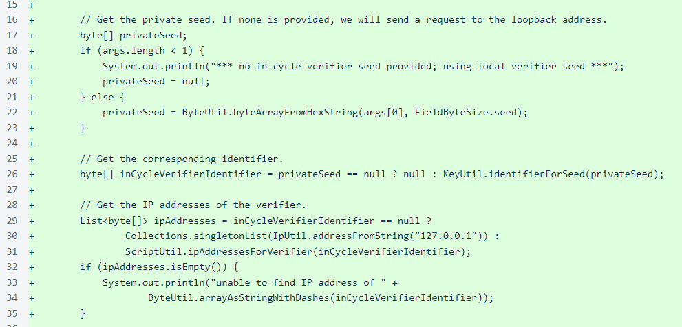

Nyzo version 504 (commit on GitHub) improves visibility into consensus issues.
This version only affects the verifier, and it does not affect the behavior of the verifier in any significant way. It only improves visibility into consensus issues. There is no need to update if you do not find this version interesting.
The Nyzo blockchain has recently stalled three times when a new verifier was added during periods of exceptional stress for the cycle. The data we collected during the stalls was insufficient for explaining these stalls, and they do not appear to have been the result of direct failures in the consensus algorithm. In all three cases, the consensus algorithm was able to identify a clear winner with more than 50% of the vote, but the natural progression from 50% to over 75% did not occur.
This build adds a field to the status response to explain why the verifier cast its latest block vote. It also corrects and improves the ConsensusTallyStatusResponse and adds a script to query for this response.
In the UnfrozenBlockManager class, the voteDescription variable has been added. This variable is updated every time the block vote is recalculated, and it tells the logic that was used to arrive at the vote.
The description is exposed through the getVoteDescription() method, and it is included in the status response as the block vote field.
The ConsensusTallyStatusResponse class has been reworked to display only the votes at the height one past the frozen edge. In an older version of Nyzo, the cycle would be working on consensus at multiple heights at the same time. This allowed long sections of the blockchain to be frozen in a single operation when the blockchain was behind. While this was a useful mechanism, it was also a very complicated mechanism, and it ultimately resulted in the collapse of the first Nyzo blockchain. In the current Nyzo blockchain, the cycle only works on consensus at one height at a time. While the BlockVoteManager still stores multiple heights of votes, the only “interesting” height is the height immediately above the frozen edge.
In the serialized form of this response, the field that stores the number of lines has been changed from one byte to two. While this does make the new form of the message incompatible with the previous form, we have not introduced a new message number for this message,as we did when the BootstrapResponse was updated. We did this for two reasons. The message is a debugging/informational message, so an incompatibility does not affect system operation. Also, the message was already broken, and there is no reason to maintain compatibility with a message that does not work.
The ConsensusTallyStatusRequestScript has been added for querying the consensus tally. It operates much like the other scripts, but it has the additional option of running in loopback mode if a private seed is not provided.
To run the script on your verifier, ssh to the verifier, navigate to the nyzoVerifier directory, and run the following command:
sudo java -jar build/libs/nyzoVerifier-1.0.jar co.nyzo.verifier.scripts.ConsensusTallyStatusRequestScript
The output should either be a long list of nicknames and votes, followed by a shorter list of vote totals for each hash, or a message saying *** no votes available for height XX ***. Both outputs indicate proper operation. It is perfectly normal for no votes to be available just past the frozen edge if a block was recently frozen.
If you want to run the script from a system that is not an in-cycle verifier, provide the private seed of an in-cycle verifier. The script will query verifier0.nyzo.co to obtain the current mesh, and it will find your verifier in the mesh and send a self-signed message to it. The command for this is similar to the previous command:
sudo java -jar build/libs/nyzoVerifier-1.0.jar co.nyzo.verifier.scripts.ConsensusTallyStatusRequestScript [seed of in-cycle verifier]
An out-of-cycle verifier will also respond to this message, but out-of-cycle verifiers do not receive broadcasts of block votes, so the response will generally be uninteresting. Also, be sure that the verifier you are querying is running this version of the code or later, or the response will be invalid.